Що знадобиться для прикрашання торту чоловікові
Оформлення торту для чоловіка – фото перших кроків
Як прикрасити торт для чоловіка, 2 стадія: як створити краватку-метелика
3 етап прикрашання торту для чоловіка в домашніх умовах: останні штрихи
Хіба можна придумати кращий подарунок на день народження чоловіка або батька, ніж смачний тематичний тортик? Приготований майстерним автором – коханою жінкою, та прикрашений оригінальним декором, він приверне увагу гостей свята та наповнить серце хлопця відчуттям того, що його люблять. Сьогодні ми розповімо, як прикрасити торт на день народження чоловіку прикольним мастичним смокінгом зі смугастою краваткою-метеликом. Процес максимально простий, тому навіть починаючий кондитер впорається із завданням.
Що знадобиться для прикрашання торту чоловікові
Інгредієнти:
- Великий круглий торт діаметром 30,5 см з кремом за улюбленим рецептом, наприклад, шоколадним. Всередині також можуть бути фрукти, ягоди – випікайте свій найкращий торт.
- 4 кг чорної мастики. Її можна пофарбувати самостійно, однак при цьому велика ймовірність забруднити не тільки себе, але й усю кухню. Простіше за все обрати готову масу потрібного відтінку, так як ідеальний чорний колір виходить далеко не завжди.
- Шматочки білої та червоної мастики для краватки-метелика та сорочки.
- Трохи крохмалю або сахарної пудри, щоб присипати поверхню.
- Харчовий клей або вода.
- 1 ст.л. світлого кукурудзяного сиропу (опціонально).
Щоб прикрасити торт чоловіку на день народження, вам знадобляться інструменти:
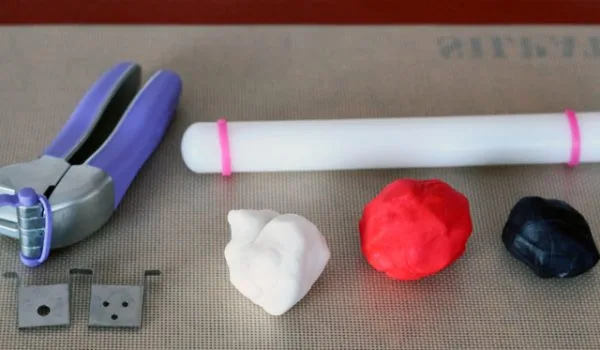
- сантиметрова стрічка або мотузка;
- праска для мастики (якщо у вас її нема, використовуйте долоні рук);
- качалки різних розмірів, бажано пластикові;
- гострий ніж з тонким лезом;
- екструдер (опціонально).
Оформлення торту для чоловіка – фото перших кроків
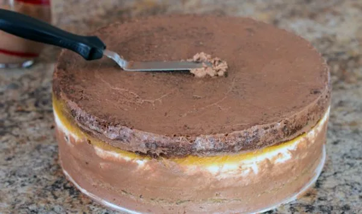
- Підготуйте торт, покрийте його шаром крему з крихтами для базового покриття за стандартною схемою обтяжки.
- Присипте крохмалем або сахарною пудрою робочу поверхню й вимісіть мастику до тих пір, поки вона не стане м’якою й податливою. Вона не повинна виглядати сухою.
- Наступний етап приготування. Візьміть мотузку або сантиметрову стрічку, щоб виміряти поверхню й боки десерту. Наприклад, якщо діаметр кондитерського виробу дорівнює 30,5 см, а висота – 10 см, то всього воно буде 45 см. Однак розкотити масу потрібно у коло з діаметром як мінімум 50 см з запасом.
- Розкотіть качалкою чорну мастику на припиленому крохмалем столі для оформлення чоловічого торту, як на фото.
Порада!
Періодично піднімайте й обертайте пласт, щоб маса не прилипла до поверхні. Якщо все ж це відбулося, підніміть мастику й присипте стіл під нею сахарною пудрою.
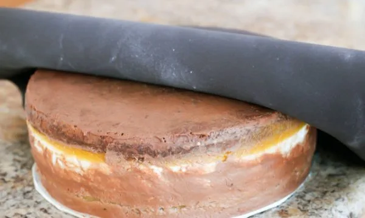
- Обережно оберніть пласт навколо качалки й положіть її на одну половину торту. Розмотайте сахарне покриття, починаючи від краю десерту у напрямку до центру й іншого боку.
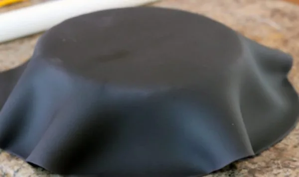
- Розправте покриття праскою або долонями, починаючи з верхньої частини. Обережно розтягуйте мастику в боки та у напрямку до низу виробу однією рукою, а другою рукою або праскою розгладжуйте сахарне покриття по кремовим бокам торту. Головний пласт повинен щільно прилягати до коржів, щоб торт з мастики для чоловіка був красивим.
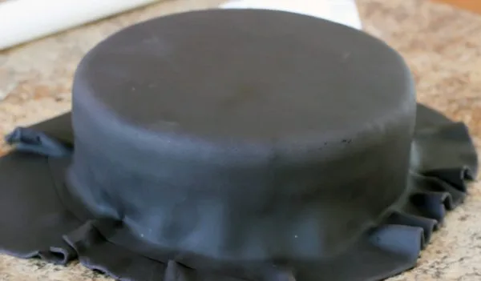
- Продовжуйте обертати кондитерський виріб (це зручно робити за допомогою спеціальної підставки) й повторювати ці кроки, поки сторони не стануть повністю гладенькими. Біля основи сахарна паста не повинна збиратися оборками. Додатково розгладьте місця, де з’явилися зморшки. Якщо ви побачили бульбашки повітря, увіткніть туди голку під кутом, щоб повітря вийшло, а потім ще раз вирівняйте поверхню.
Порада!
Краще все ж таки використовувати праску, бо від рук на мастичному покритті іноді залишаються відбитки, а від тепла тіла воно стає липким.
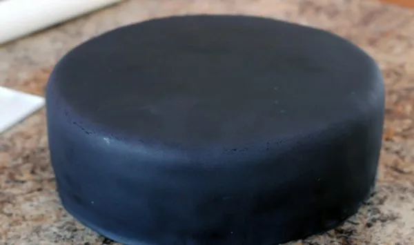
- Обріжте пласт біля основи торту кондитерським скальпелем-різаком або ножем для піци. Якщо у вас їх нема, використовуйте найгостріший ніж з наявних.
Як прикрасити торт для чоловіка, 2 стадія: як створити краватку-метелика
Приступайте до наступного етапу оформлення торту для чоловіка на день народження – до ліплення бантика. Для нього знадобиться трохи білої, червоної та чорної мастики. Зробити такий дизайн, як на фото, можна двома способами.
Метод 1
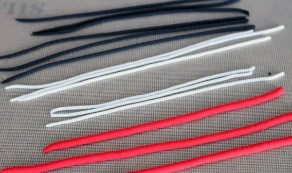
- Використовуйте екструдер, щоб видавити три довгих червоних джгути, два білих і два чорних. Червоні джгути повинні бути товще білих і чорних.
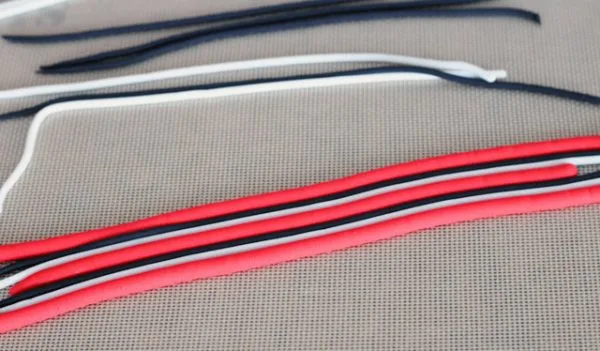
- Розташуйте отримані «мотузки» поряд одна з одною в такому порядку, як вказано на фотографії. Злегка змажте водою стики між ними, щоб вони склеїлись.
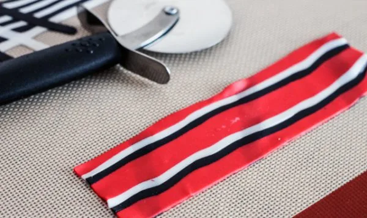
- Візьміть качалку для мастики й розкотіть джгути, злегка притискаючи. Притискайте качалку рівномірно по всій площі джгутів, інакше смужки на краватці-метелику будуть нерівними.
Порада!
Можна змішати мастику с невеликою кількістю тілози (кондитерський СМС), щоб краватка-метелик застигла швидше та можна було оформити торт, не втрачаючи часу.
Метод 2
- Присипте свою робочу поверхню цукровою пудрою або крохмалем і розкотіть мастику всіх трьох кольорів. Червона заготовка краватки-метелика для прикрашання чоловічого торту на день народження повинна бути у вигляді прямокутника розміром 40х13 см.
- Виріжте тонкі рівні смужки з білої та чорної мастики. Використовуйте лінійку для зручності та акуратності.
- Приліпіть білі та чорні смужки зверху на розкочений червоний прямокутник за допомогою води. Скалкою обережно притисніть та розгладьте смужки, притискаючи рівномірно по всій довжині.
Як зліпити краватку-метелик
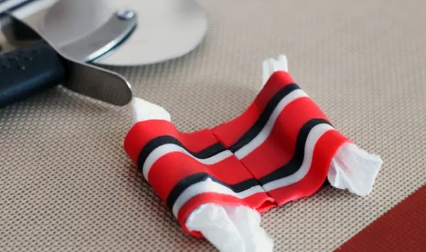
- З отриманої трикольорової заготовки виріжте прямокутник 5х20 см. Переверніть його, змастіть водою або харчовим клеєм посередині та заверніть до центру краї прямокутника, з’єднавши їх. Покладіть всередину петельок невеликі шматочки паперових рушників, щоб виріб тримав форму.
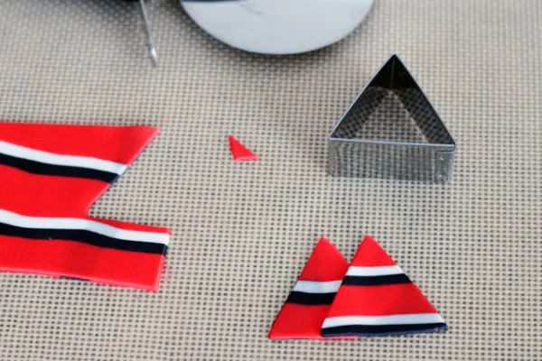
- Продовжуючи робити прикраси торту для чоловіка своїми руками по фото, із решти смугастої мастики виріжте невеликий прямокутник, щоб обернути навколо середини краватки-метелика. Також за допомогою форми для печива видавіть два маленьких трикутника для хусточки в кармані смокінгу.
- Оберніть середину краватки прямокутником і скріпіть його з тильного боку. Дайте декору висохнути декілька часів.
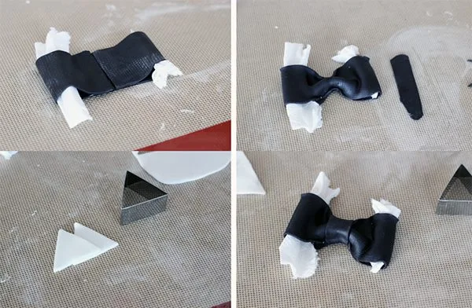
Порада!
Для простоти можна зробити ювілейну чорну краватку-метелика та білі хусточки-трикутники в тему до нього.
3 етап прикрашання торту для чоловіка в домашніх умовах: останні штрихи
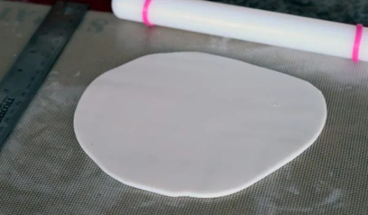
- Припиліть робочу поверхню крохмалем або цукровою пудрою. Розкотіть білу мастику.
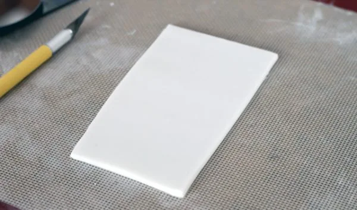
- Виріжте прямокутник 9х7 см, щоб зробити сорочку.
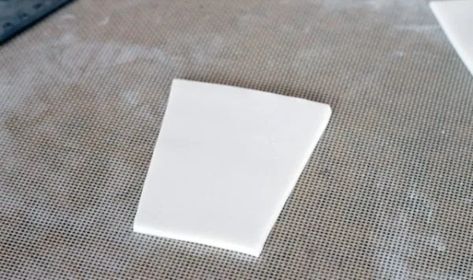
- Злегка зріжте прямокутник по довгим сторонам, щоб вийшла трапецієподібна форма. Тепер ширина внизу повинна бути 5 см, а вверху – 7 см.
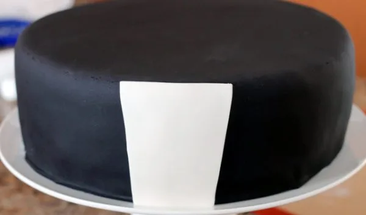
- Змастіть заготовку сорочки позаду харчовим клеєм або водою та прикріпіть до поверхні до того, як прикрасити торт для чоловіка за фото рештою декору.
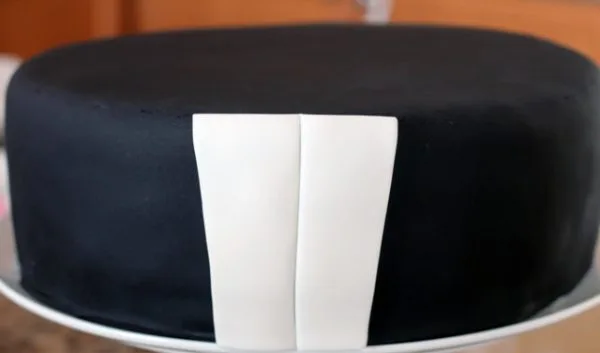
- Візьміть ніж або валик для піци та продавіть смугу посередині сорочки зверху до низу, щоб зробити лінію ґудзиків. При цьому намагайтеся не прорізати мастику повністю.
- Розкотіть трохи чорної мастики та виріжте лацкани смокінгу. Зробіть крихітні ґудзики, розкотивши маленькі кульки чорного кольору. Приєднайте всі деталі декору до торту, змастивши водою.
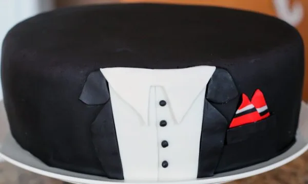
- Виріжте комір сорочки з білої мастики та приклейте до неї.
- Змастіть харчовим клеєм краватку-метелика зі зворотного боку та прикріпіть до коміру сорочки. Також прикріпіть збоку вирізані хусточки.
- Розкотіть тонку смугу чорної мастики, щоб зробити карман, і розташуйте її на торті під трикутними хусточками, злегка внапуск на них.
- Щоб смокінг був особливо святковим, змішайте столову ложку світлого кукурудзяного сиропу зі столовою ложкою води та змастіть сумішшю деякі частини смокінгу. Наприклад, лацкани, карман, краватку, нижню частину торту з мастики для чоловіка.
{kind=link}
{kind=link}
{kind=link}
Це був той самий останній штрих! Тепер можна вручити торт ювіляру, чоловіку, хлопцю, брату або татові – цікавий і смачний подарунок готовий. Такий презент можна вручити і на п’ятдесятиліття, і на інші круглі дати. Якщо ж ви хочете чогось простіше, то приготуйте швидкий торт зі смішними фігурками M&M’s з мастики – прикол буде гідно оцінений! Або ж відкрийте добірку інших варіантів декорування тут – рядок пошуку також допоможе вам визначитися.
Також рекомендуємо подивитись альтернативний варіант оформлення торту-смокінга на відео: